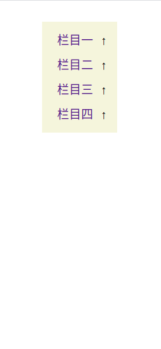
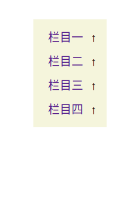
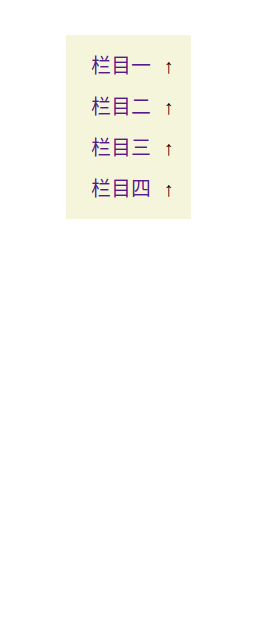

Recently, I’ve seen several demo projects of management systems. Combining this with some inconvenient aspects encountered during development, I noticed that most websites’ side navigation bars expand on click and collapse on click.
This interaction feels a bit cumbersome:
Then I thought, could the click event be replaced with a hover event? As long as the mouse hovers over it, the menu will automatically expand without needing a click. However, simply using hover to expand requires considering the issue of inconsistent menu lengths. If the next menu is shorter than the current menu, the mouse leaving the current menu will cause the current menu to collapse, and the mouse will directly skip over the next shorter menu.
As shown in the image, Column 2 has a length of 4, and Column 3 has a length of 2. When the mouse moves down from Column 2, the moment it leaves Column 2, Column 2 retracts, causing the mouse to hover directly over Column 4 without passing Column 3, which is illogical and contradicts user expectations. Logically, Column 3 should follow Column 2.
To address this issue, the interaction can be designed such that when the mouse leaves Column 2, Column 2 doesn’t retract until the mouse leaves the entire navigation bar. If a parent menu is clicked while a submenu is expanded, that parent menu won’t retract even if the mouse leaves the navigation bar.
Below is a demo page embedded via iframe, allowing for a comparison of the two side navigation bar interaction methods (there are no hover events on mobile). I prefer more flexible interactions; in the second method, clicking the parent menu also expands and collapses the list, adding hover auto-expand functionality on top of the first method.
Compared to the hover auto-expand without retraction method, a more advanced approach is that when the mouse moves from top to bottom, the submenu automatically expands but doesn’t retract. When the mouse moves from bottom to top, the submenu automatically expands and retracts. Whether the submenu should retract depends on whether it affects the user’s next operation. However, implementing such an effect is somewhat complex. For a navigation bar on a webpage, continuously monitoring the mouse coordinates entails a higher development and maintenance cost.